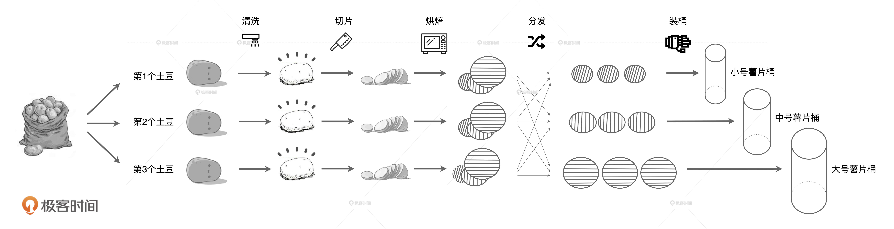
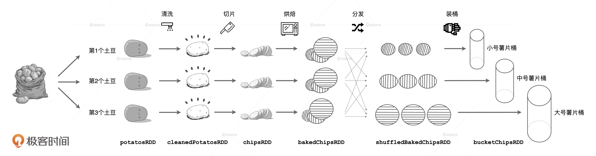
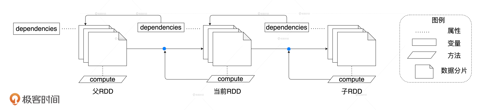
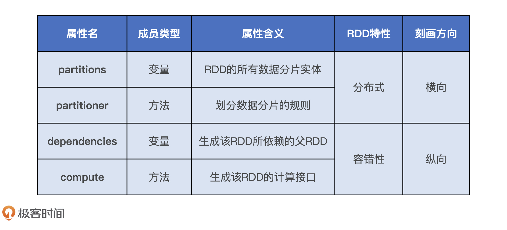

- 00 开篇词 Spark性能调优，你该掌握这些“套路”.md.html
- 01 性能调优的必要性：Spark本身就很快，为啥还需要我调优？.md.html
- 02 性能调优的本质：调优的手段五花八门，该从哪里入手？.md.html
- 03 RDD：为什么你必须要理解弹性分布式数据集？.md.html
- 04 DAG与流水线：到底啥叫“内存计算”？.md.html
- 05 调度系统：“数据不动代码动”到底是什么意思？.md.html
- 06 存储系统：空间换时间，还是时间换空间？.md.html
- 07 内存管理基础：Spark如何高效利用有限的内存空间？.md.html
- 08 应用开发三原则：如何拓展自己的开发边界？.md.html
- 09 调优一筹莫展，配置项速查手册让你事半功倍！（上）.md.html
- 10 调优一筹莫展，配置项速查手册让你事半功倍！（下）.md.html
- 11 为什么说Shuffle是一时无两的性能杀手？.md.html
- 12 广播变量（一）：克制Shuffle，如何一招制胜！.md.html
- 13 广播变量（二）：如何让Spark SQL选择Broadcast Joins？.md.html
- 14 CPU视角：如何高效地利用CPU？.md.html
- 15 内存视角（一）：如何最大化内存的使用效率？.md.html
- 16 内存视角（二）：如何有效避免Cache滥用？.md.html
- 17 内存视角（三）：OOM都是谁的锅？怎么破？.md.html
- 18 磁盘视角：如果内存无限大，磁盘还有用武之地吗？.md.html
- 19 网络视角：如何有效降低网络开销？.md.html
- 20 RDD和DataFrame：既生瑜，何生亮？.md.html
- 21 Catalyst逻辑计划：你的SQL语句是怎么被优化的？（上）.md.html
- 22 Catalyst物理计划：你的SQL语句是怎么被优化的（下）？.md.html
- 23 钨丝计划：Tungsten给开发者带来了哪些福报？.md.html
- 24 Spark 3.0（一）：AQE的3个特性怎么才能用好？.md.html
- 25 Spark 3.0（二）：DPP特性该怎么用？.md.html
- 26 Join Hints指南：不同场景下，如何选择Join策略？.md.html
- 27 大表Join小表：广播变量容不下小表怎么办？.md.html
- 28 大表Join大表（一）：什么是“分而治之”的调优思路？.md.html
- 29 大表Join大表（二）：什么是负隅顽抗的调优思路？.md.html
- 30 应用开发：北京市小客车（汽油车）摇号趋势分析.md.html
- 31 性能调优：手把手带你提升应用的执行性能.md.html
- Spark UI（上）深入解读Spark作业的“体检报告”.md.html
- Spark UI（下）：深入解读Spark作业的“体检报告”.md.html
- 期末考试 “Spark性能调优”100分试卷等你来挑战！.md.html
- 结束语 在时间面前，做一个笃定学习的人.md.html
- 捐赠
03 RDD：为什么你必须要理解弹性分布式数据集？
你好，我是吴磊。
从今天开始，我们进入原理篇的学习。我会以性能调优为导向，给你详细讲讲Spark中的核心概念RDD和DAG，以及重要组件调度系统、存储系统和内存管理。这节课，咱们先来说说RDD。
RDD可以说是Spark中最基础的概念了，使用Spark的开发者想必对RDD都不陌生，甚至提起RDD，你的耳朵可能都已经听出茧子了。不过，随着Spark开发API的演进和发展，现在上手开发基本都是DataFrame或Dataset API。所以很多初学者会认为，“反正RDD API基本都没人用了，我也没必要弄明白RDD到底是什么。”
真的是这样的吗？当然不是。
RDD为何如此重要
首先，RDD作为Spark对于分布式数据模型的抽象，是构建Spark分布式内存计算引擎的基石。很多Spark核心概念与核心组件，如DAG和调度系统都衍生自RDD。因此，深入理解RDD有利于你更全面、系统地学习Spark的工作原理。
其次，尽管RDD API使用频率越来越低，绝大多数人也都已经习惯于DataFrame和Dataset API，但是，无论采用哪种API或是哪种开发语言，你的应用在Spark内部最终都会转化为RDD之上的分布式计算。换句话说，如果你想要在运行时判断应用的性能瓶颈，前提是你要对RDD足够了解。还记得吗？定位性能瓶颈是Spark性能调优的第一步。
不仅如此，对于RDD不求甚解还有可能带来潜在的性能隐患，接下来，我们就从一个反例入手，一起来分析一下。
还记得，我们在第1讲中讲过的数据过滤与聚合的反例吗？通过这个例子我们明白了性能调优的必要性。那这个例子和RDD有什么关系呢？
别着急，我们先来回顾一下这个案例中的代码实现，去挖掘开发者采用这种实现方式的深层原因。
//实现方案1 —— 反例
def createInstance(factDF: DataFrame, startDate: String, endDate: String): DataFrame = {
val instanceDF = factDF
.filter(col("eventDate") > lit(startDate) && col("eventDate") <= lit(endDate))
.groupBy("dim1", "dim2", "dim3", "event_date")
.agg("sum(value) as sum_value")
instanceDF
}
pairDF.collect.foreach{
case (startDate: String, endDate: String) =>
val instance = createInstance(factDF, startDate, endDate)
val outPath = s"${rootPath}/endDate=${endDate}/startDate=${startDate}"
instance.write.parquet(outPath)
}
在这段代码中，createInstance的主要逻辑是按照时间条件对factDF进行过滤，返回汇总的业务统计量，然后pairDF循环遍历每一对开始时间和结束时间，循环调用createInstance获取汇总结果并落盘。我们在第1课中分析过，这份代码的主要问题在于囊括上千万行数据的factDF被反复扫描了几百次，而且是全量扫描，从而拖垮了端到端的执行性能。
那么，我们不禁要问：开发者究竟为什么会想到用这种低效的方式去实现业务逻辑呢？或者说，是什么内驱因素让开发者自然而然地采用这种实现方式呢？
让我们跳出Spark、跳出这个专栏，把自己置身于一间教室内：黑板前，老师正在讲解《XX语言编程》，旁边是你的同学，他边听老师讲课，边翻看着桌上的课本。这个场景熟不熟悉？亲不亲切？回想一下，老师讲的、书本上教的和我们示例中的代码，是不是极其类似？
没错！我们的大脑，已经习惯了for循环，习惯了用函数处理变量、封装计算逻辑，习惯了面向过程的编程模式。在分布式计算出现以前，我们都是这么开发的，老师也是这么讲的，书本上也是这么教的，没毛病。
因此我认为，开发者之所以会选择上面的实现方式，根本原因在于他把factDF当成了一个普通变量，一个与createInstance函数中startDate、endDate同等地位的形参，他并没有意识到，factDF实际上是一个庞大的、横跨所有计算节点的分布式数据集合，更没有意识到，在分布式运行环境中，外面的for循环会导致这个庞大的数据集被反复地全量扫描。
这种对于分布式计算认知方面的缺失，究其缘由，还是我们对Spark核心概念RDD的理解不够透彻。所以你看，深入理解RDD还是很有必要的，对于RDD一知半解，极有可能在应用开发的过程中，不知不觉地留下潜在的性能隐患。
深入理解RDD
既然RDD如此重要，它究竟是什么呢？2010年，在一个夜黑风高的夜晚，Matei等人发表了一篇名为《Spark: Cluster Computing with Working Sets》的论文并首次提出了RDD的概念。RDD，全称Resilient Distributed Datasets，翻译过来就是弹性分布式数据集。本质上，它是对于数据模型的抽象，用于囊括所有内存中和磁盘中的分布式数据实体。
如果就这么从理论出发、照本宣科地讲下去，未免过于枯燥、乏味、没意思！不如，我先来给你讲个故事。
从薯片的加工流程看RDD
在很久很久以前，有个生产桶装薯片的工坊，工坊的规模较小，工艺也比较原始。为了充分利用每一颗土豆、降低生产成本，工坊使用 3 条流水线来同时生产 3 种不同尺寸的桶装薯片。3 条流水线可以同时加工 3 颗土豆，每条流水线的作业流程都是一样的，分别是清洗、切片、烘焙、分发和装桶。其中，分发环节用于区分小、中、大号 3 种薯片，3种不同尺寸的薯片分别被发往第1、2、3条流水线。具体流程如下图所示。

看得出来，这家工坊制作工艺虽然简单，倒也蛮有章法。从头至尾，除了分发环节，3 条流水线没有任何交集。在分发环节之前，每条流水线都是专心致志、各顾各地开展工作：把土豆食材加载到流水线上，再进行清洗、切片、烘焙；在分发环节之后，3 条流水线也是各自装桶，互不干涉、互不影响。流水线的作业方式提供了较强的容错能力，如果某个加工环节出错，工人们只需要往出错的流水线上重新加载一颗新的土豆，整个流水线就能够恢复生产。
好了，故事讲完了。如果我们把每一条流水线看作是分布式运行环境的计算节点，用薯片生产的流程去类比Spark分布式计算，会有哪些有趣的发现呢？
仔细观察，我们发现：刚从地里挖出来的土豆食材、清洗过后的干净土豆、生薯片、烤熟的薯片，流水线上这些食材的不同形态，就像是Spark中RDD对于不同数据集合的抽象。
沿着流水线的纵深方向，也就是图中从左向右的方向，每一种食材形态都是在前一种食材之上用相应的加工方法进行处理得到的。每种食材形态都依赖于前一种食材，这就像是RDD中dependencies属性记录的依赖关系，而不同环节的加工方法，对应的刚好就是RDD的compute属性。
横看成岭侧成峰，再让我们从横向的角度来重新审视上面的土豆加工流程，也就是图中从上至下的方向，让我们把目光集中在流水线开端那3颗带泥的土豆上。这3颗土豆才从地里挖出来，是原始的食材形态，正等待清洗。如图所示，我们把这种食材形态标记为potatosRDD，那么，这里的每一颗土豆就是RDD中的数据分片，3颗土豆一起对应的就是RDD的partitions属性。

带泥土豆经过清洗、切片和烘焙之后，按照大小个儿被分发到下游的3条流水线上，这3条流水线上承载的RDD记为shuffledBakedChipsRDD。很明显，这个RDD对于partitions的划分是有讲究的，根据尺寸的不同，即食薯片会被划分到不同的数据分片中。像这种数据分片划分规则，对应的就是RDD中的partitioner属性。 在分布式运行环境中，partitioner属性定义了RDD所封装的分布式数据集如何划分成数据分片。
总的来说，我们发现，薯片生产的流程和Spark分布式计算是一一对应的，一共可以总结为6点：
- 土豆工坊的每条流水线就像是分布式环境中的计算节点；
- 不同的食材形态，如带泥的土豆、土豆切片、烘烤的土豆片等等，对应的就是RDD；
- 每一种食材形态都会依赖上一种形态，如烤熟的土豆片依赖上一个步骤的生土豆切片。这种依赖关系对应的就是RDD中的dependencies属性；
- 不同环节的加工方法对应RDD的compute属性；
- 同一种食材形态在不同流水线上的具体实物，就是RDD的partitions属性；
- 食材按照什么规则被分配到哪条流水线，对应的就是RDD的partitioner属性。
不知道土豆工坊的类比，有没有帮你逐渐勾勒出RDD的本来面貌呢？话付前言，接下来，咱们来一本正经地聊聊RDD。
RDD的核心特征和属性
通过刚才的例子，我们知道RDD具有4大属性，分别是partitions、partitioner、dependencies和compute属性。正因为有了这4大属性的存在，让RDD具有分布式和容错性这两大最突出的特性。要想深入理解RDD，我们不妨从它的核心特性和属性入手。
首先，我们来看partitions、partitioner属性。
在分布式运行环境中，RDD封装的数据在物理上散落在不同计算节点的内存或是磁盘中，这些散落的数据被称“数据分片”，RDD的分区规则决定了哪些数据分片应该散落到哪些节点中去。RDD的partitions属性对应着RDD分布式数据实体中所有的数据分片，而partitioner属性则定义了划分数据分片的分区规则，如按哈希取模或是按区间划分等。
不难发现，partitions和partitioner属性刻画的是RDD在跨节点方向上的横向扩展，所以我们把它们叫做RDD的“横向属性”。
然后，我们再来说说dependencies和compute属性。
在Spark中，任何一个 RDD 都不是凭空产生的，每个 RDD 都是基于某种计算逻辑从某个“数据源”转换而来。RDD的dependencies属性记录了生成RDD 所需的“数据源”，术语叫做父依赖（或父RDD），compute方法则封装了从父 RDD到当前RDD转换的计算逻辑。
基于数据源和转换逻辑，无论RDD有什么差池（如节点宕机造成部分数据分片丢失），在dependencies属性记录的父RDD之上，都可以通过执行compute封装的计算逻辑再次得到当前的RDD，如下图所示。

由dependencies和compute属性提供的容错能力，为Spark分布式内存计算的稳定性打下了坚实的基础，这也正是RDD命名中Resilient的由来。接着观察上图，我们不难发现，不同的RDD通过dependencies和compute属性链接在一起，逐渐向纵深延展，构建了一张越来越深的有向无环图，也就是我们常说的DAG。
由此可见，dependencies属性和compute属性负责RDD在纵深方向上的延展，因此我们不妨把这两个属性称为“纵向属性”。
总的来说，RDD的4大属性又可以划分为两类，横向属性和纵向属性。其中，横向属性锚定数据分片实体，并规定了数据分片在分布式集群中如何分布；纵向属性用于在纵深方向构建DAG，通过提供重构RDD的容错能力保障内存计算的稳定性。
同时，为了帮助你记忆，我把这4大核心属性的基本概念和分类总结在了如下的表格中，你可以看一看。

除此之外，我还想再多说两句。在这节课开头的反例中，我们分析了开发者采用foreach语句循环遍历分布式数据集的深层次原因。这种不假思索地直入面向过程编程、忽略或无视分布式数据实体的编程模式，我将其称为单机思维模式。
在学习了RDD横向的partitions属性和纵向的dependencies属性之后，如果你能把它们牢记于心，那么在频繁调用或引用这个RDD之前，你自然会想到它所囊括的数据集合，很有可能在全节点范围内被反复扫描、反复计算。这种下意识的反思会驱使你尝试探索其他更优的实现方式，从而跳出单机思维模式。因此，深入理解RDD，也有利于你跳出单机思维模式，避免在应用代码中留下性能隐患。
小结
今天，我带你学习了RDD的重要性，以及它的2大核心特性和4大属性。
首先，深入理解RDD对开发者来说有百利而无一害，原因有如下3点：
- Spark很多核心概念都衍生自RDD，弄懂RDD，有利于你全面地学习Spark；
- 牢记RDD的关键特性和核心属性，有利于你在运行时更好地定位性能瓶颈，而瓶颈定位，恰恰是性能调优的前提；
- 深入理解RDD有利于你跳出单机思维模式，避免在应用代码中留下性能隐患。
关于RDD的特性与核心属性，只要你把如下2点牢记于心，我相信在不知不觉中你自然会绕过很多性能上的坑：
- 横向属性partitions和partitioner锚定数据分片实体，并且规定了数据分片在分布式集群中如何分布；
- 纵向属性dependencies和compute用于在纵深方向构建DAG，通过提供重构RDD的容错能力保障内存计算的稳定性。
每日一练
在日常的开发工作中，你遇到过“单机思维模式”吗？有哪些呢？
除了我们今天讲的4大属性，RDD还有个很重要的属性：preferredLocations。按照经验，你认为在哪些情况下，preferredLocations很重要，会提升I/O效率，又在哪些环境中不起作用呢？为什么？
期待在留言区看到你的思考，也欢迎你分享工作中遇到过的“单机思维模式”，我们下节课见！
© 2019 - 2023 Liangliang Lee. Powered by gin and hexo-theme-book.